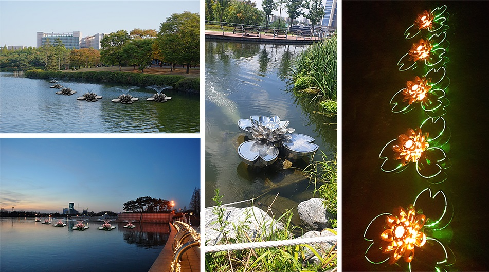
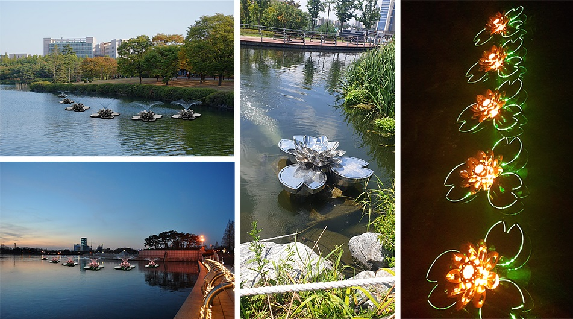

Smart WAS 사양소개
-규격(mm): W1750 X D1500 X H1050-무게: 200kg
-순환유량: 30m³/h
워터코리아 마이크로버블 기술

(주)워터코리아의 마이크로버블기술은 공기를 미세하게 쪼개어 물 속에 용해를 시킵니다.
마이크로 버블은 일반 버블과 다르게 느리게 부상하여 용존량을 높이고, 음이온을 발생시킵니다.
이는 오염된 물에 가장 부족한 산소를 가장 효과적으로 제공하는 기술입니다.
또한 물 속에 떠다니는 녹조와 부유물을 둘러싸 수면으로 부상시켜 Smart DFS와 함께 수질을 개선합니다.
오존과 OH radical 살균 기술
(주)워터코리아의 오존 발생 기술은 공기 중 산소와 물을 사용하여 음이온 마이크로 버블 형태의 오존을 발생시킵니다.
이때 오존과 더불어 OH Radical이 발생되며, 염소보다도 강력한 살균력과 정화력을 나타냅니다.
(주)워터코리아의 마이크로버블 기술은 오존을 음이온 마이크로버블에 담아 살균 효과를 극대화 했으며,
오존이 물 속에 더욱 오래 녹아있도록 만듭니다.
또한, 오존과 OH Radical은 잔류되지 않고 산화되어 2차 오염의 문제가 없습니다.
화학물을 사용하면 발생할 수 있는 2차 오염을 원천적으로 차단하는 친환경 기술입니다.
아름다운 경관 제공
(Smart WAS는 가장 수질개선 능력이 뛰어난 수중식물인 연꽃을 모티브로 디자인 되었습니다.
단순한 기계장치에 불과한 기존의 수질개선 장비와 다르게, Smart WAS는 아름다운 연꽃을 형상화
하여 도심 속에서도 미관을 해치지 않습니다.
게다가 낮에는 분수가 볼거리를 제공하고, 야간이면 연꽃에서 아름다운 LED 불빛이 다양한 색깔로
나와 조경의 미(美)를 한껏 끌어올려 줍니다.